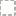

<!doctype html>
<html lang="en">
    <head>
        <meta charset="utf-8">
        <meta http-equiv="X-UA-Compatible" content="IE=edge">
        <meta name="viewport" content="initial-scale=1,user-scalable=no,maximum-scale=1,width=device-width">
        <meta name="mobile-web-app-capable" content="yes">
        <meta name="apple-mobile-web-app-capable" content="yes">
        <link rel="stylesheet" href="css/leaflet.css">
        <link rel="stylesheet" href="css/L.Control.Layers.Tree.css">
        <link rel="stylesheet" href="css/qgis2web.css">
        <link rel="stylesheet" href="css/fontawesome-all.min.css">
        <link rel="stylesheet" href="css/leaflet.photon.css">
        <link rel="stylesheet" href="css/leaflet-measure.css">
        <style>
        html, body, #map {
            width: 100%;
            height: 100%;
            padding: 0;
            margin: 0;
        }
        </style>
        <title> Sebaran Cagar Budaya Tingkat Provinsi  Jawa Timur</title>
    </head>
    <body>
        <div id="map">
        </div>
        <script src="js/qgis2web_expressions.js"></script>
        <script src="js/leaflet.js"></script>
        <script src="js/L.Control.Layers.Tree.min.js"></script>
        <script src="js/leaflet.rotatedMarker.js"></script>
        <script src="js/leaflet.pattern.js"></script>
        <script src="js/leaflet-hash.js"></script>
        <script src="js/Autolinker.min.js"></script>
        <script src="js/rbush.min.js"></script>
        <script src="js/labelgun.min.js"></script>
        <script src="js/labels.js"></script>
        <script src="js/leaflet.photon.js"></script>
        <script src="js/leaflet-measure.js"></script>
        <script src="data/bataskabupatenandkota_1.js"></script>
        <script src="data/zonagunungapi_2.js"></script>
        <script src="data/resikobencana_3.js"></script>
        <script src="data/jaringanjalan_4.js"></script>
        <script src="data/CagarBudayaPeringkatProvinsi_5.js"></script>
        <script>
        var highlightLayer;
        function highlightFeature(e) {
            highlightLayer = e.target;

            if (e.target.feature.geometry.type === 'LineString' || e.target.feature.geometry.type === 'MultiLineString') {
              highlightLayer.setStyle({
                color: '#ffff00',
              });
            } else {
              highlightLayer.setStyle({
                fillColor: '#ffff00',
                fillOpacity: 1
              });
            }
        }
        var map = L.map('map', {
            zoomControl:false, maxZoom:28, minZoom:1
        }).fitBounds([[-8.795115822657369,108.55744456454377],[-3.788971874398159,118.07733648799605]]);
        var hash = new L.Hash(map);
        map.attributionControl.setPrefix('<a href="https://github.com/tomchadwin/qgis2web" target="_blank">qgis2web</a> &middot; <a href="https://leafletjs.com" title="A JS library for interactive maps">Leaflet</a> &middot; <a href="https://qgis.org">QGIS</a>');
        var autolinker = new Autolinker({truncate: {length: 30, location: 'smart'}});
        // remove popup's row if "visible-with-data"
        function removeEmptyRowsFromPopupContent(content, feature) {
         var tempDiv = document.createElement('div');
         tempDiv.innerHTML = content;
         var rows = tempDiv.querySelectorAll('tr');
         for (var i = 0; i < rows.length; i++) {
             var td = rows[i].querySelector('td.visible-with-data');
             var key = td ? td.id : '';
             if (td && td.classList.contains('visible-with-data') && feature.properties[key] == null) {
                 rows[i].parentNode.removeChild(rows[i]);
             }
         }
         return tempDiv.innerHTML;
        }
        // add class to format popup if it contains media
		function addClassToPopupIfMedia(content, popup) {
			var tempDiv = document.createElement('div');
			tempDiv.innerHTML = content;
			if (tempDiv.querySelector('td img')) {
				popup._contentNode.classList.add('media');
					// Delay to force the redraw
					setTimeout(function() {
						popup.update();
					}, 10);
			} else {
				popup._contentNode.classList.remove('media');
			}
		}
        var title = new L.Control({'position':'bottomright'});
        title.onAdd = function (map) {
            this._div = L.DomUtil.create('div', 'info');
            this.update();
            return this._div;
        };
        title.update = function () {
            this._div.innerHTML = '<h2> Sebaran Cagar Budaya Tingkat Provinsi  Jawa Timur</h2>';
        };
        title.addTo(map);
        var abstract = new L.Control({'position':'topright'});
        abstract.onAdd = function (map) {
            this._div = L.DomUtil.create('div',
            'leaflet-control abstract');
            this._div.id = 'abstract'
                this._div.setAttribute("onmouseenter", "abstract.show()");
                this._div.setAttribute("onmouseleave", "abstract.hide()");
                this.hide();
                return this._div;
            };
            abstract.hide = function () {
                this._div.classList.remove("abstractUncollapsed");
                this._div.classList.add("abstract");
                this._div.innerHTML = 'i'
            }
            abstract.show = function () {
                this._div.classList.remove("abstract");
                this._div.classList.add("abstractUncollapsed");
                this._div.innerHTML = 'Peta ini menampilkan lokasi Cagar Budaya peringkat Provinsi Jawa Timur beserta data pendukung seperti : jaringan jalan,batas kabupaten/kota,serta overlay kawasan risiko bencana (gempa bumi,banjir,banjir bandang,likuifaksi,longsor) dan zona rawan gunung api. Peta ini disusun menggunakan data pengolahan SIG. Diperoleh dari Dinas Kebudayaan dan Pariwisata Provinsi Jawa Timur,Dinas Pekerjaan Umum Provinsi Jawa Timur dan Pusat Vulkanologi dan Mitigasi Bencana Geologi.';
        };
        abstract.addTo(map);
        var zoomControl = L.control.zoom({
            position: 'topleft'
        }).addTo(map);
        var measureControl = new L.Control.Measure({
            position: 'topleft',
            primaryLengthUnit: 'meters',
            secondaryLengthUnit: 'kilometers',
            primaryAreaUnit: 'sqmeters',
            secondaryAreaUnit: 'hectares'
        });
        measureControl.addTo(map);
        document.getElementsByClassName('leaflet-control-measure-toggle')[0].innerHTML = '';
        document.getElementsByClassName('leaflet-control-measure-toggle')[0].className += ' fas fa-ruler';
        var bounds_group = new L.featureGroup([]);
        function setBounds() {
        }
        map.createPane('pane_OpenStreetMap_0');
        map.getPane('pane_OpenStreetMap_0').style.zIndex = 400;
        var layer_OpenStreetMap_0 = L.tileLayer('https://tile.openstreetmap.org/{z}/{x}/{y}.png', {
            pane: 'pane_OpenStreetMap_0',
            opacity: 1.0,
            attribution: '',
            minZoom: 1,
            maxZoom: 28,
            minNativeZoom: 0,
            maxNativeZoom: 19
        });
        layer_OpenStreetMap_0;
        map.addLayer(layer_OpenStreetMap_0);
        function pop_bataskabupatenandkota_1(feature, layer) {
            layer.on({
                mouseout: function(e) {
                    for (var i in e.target._eventParents) {
                        if (typeof e.target._eventParents[i].resetStyle === 'function') {
                            e.target._eventParents[i].resetStyle(e.target);
                        }
                    }
                },
                mouseover: highlightFeature,
            });
            var popupContent = '<table>\
                    <tr>\
                        <th scope="row">KABUPATEN</th>\
                        <td>' + (feature.properties['KABUPATEN'] !== null ? autolinker.link(String(feature.properties['KABUPATEN']).replace(/'/g, '\'').toLocaleString()) : '') + '</td>\
                    </tr>\
                    <tr>\
                        <th scope="row">PROVINSI</th>\
                        <td>' + (feature.properties['PROVINSI'] !== null ? autolinker.link(String(feature.properties['PROVINSI']).replace(/'/g, '\'').toLocaleString()) : '') + '</td>\
                    </tr>\
                    <tr>\
                        <th scope="row">Shape_Area</th>\
                        <td>' + (feature.properties['Shape_Area'] !== null ? autolinker.link(String(feature.properties['Shape_Area']).replace(/'/g, '\'').toLocaleString()) : '') + '</td>\
                    </tr>\
                </table>';
            var content = removeEmptyRowsFromPopupContent(popupContent, feature);
			layer.on('popupopen', function(e) {
				addClassToPopupIfMedia(content, e.popup);
			});
			layer.bindPopup(content, { maxHeight: 400 });
        }

        function style_bataskabupatenandkota_1_0() {
            return {
                pane: 'pane_bataskabupatenandkota_1',
                opacity: 1,
                color: 'rgba(83,84,68,1.0)',
                dashArray: '2.0,4.0',
                lineCap: 'square',
                lineJoin: 'bevel',
                weight: 2.0,
                fillOpacity: 0,
                interactive: true,
            }
        }
        map.createPane('pane_bataskabupatenandkota_1');
        map.getPane('pane_bataskabupatenandkota_1').style.zIndex = 401;
        map.getPane('pane_bataskabupatenandkota_1').style['mix-blend-mode'] = 'normal';
        var layer_bataskabupatenandkota_1 = new L.geoJson(json_bataskabupatenandkota_1, {
            attribution: '',
            interactive: true,
            dataVar: 'json_bataskabupatenandkota_1',
            layerName: 'layer_bataskabupatenandkota_1',
            pane: 'pane_bataskabupatenandkota_1',
            onEachFeature: pop_bataskabupatenandkota_1,
            style: style_bataskabupatenandkota_1_0,
        });
        bounds_group.addLayer(layer_bataskabupatenandkota_1);
        map.addLayer(layer_bataskabupatenandkota_1);
        function pop_zonagunungapi_2(feature, layer) {
            layer.on({
                mouseout: function(e) {
                    for (var i in e.target._eventParents) {
                        if (typeof e.target._eventParents[i].resetStyle === 'function') {
                            e.target._eventParents[i].resetStyle(e.target);
                        }
                    }
                },
                mouseover: highlightFeature,
            });
            var popupContent = '<table>\
                    <tr>\
                        <th scope="row">NAMOBJ</th>\
                        <td>' + (feature.properties['NAMOBJ'] !== null ? autolinker.link(String(feature.properties['NAMOBJ']).replace(/'/g, '\'').toLocaleString()) : '') + '</td>\
                    </tr>\
                    <tr>\
                        <th scope="row">REMARK</th>\
                        <td>' + (feature.properties['REMARK'] !== null ? autolinker.link(String(feature.properties['REMARK']).replace(/'/g, '\'').toLocaleString()) : '') + '</td>\
                    </tr>\
                    <tr>\
                        <th scope="row">THTERBIT</th>\
                        <td>' + (feature.properties['THTERBIT'] !== null ? autolinker.link(String(feature.properties['THTERBIT']).replace(/'/g, '\'').toLocaleString()) : '') + '</td>\
                    </tr>\
                    <tr>\
                        <th scope="row">Status</th>\
                        <td>' + (feature.properties['Status'] !== null ? autolinker.link(String(feature.properties['Status']).replace(/'/g, '\'').toLocaleString()) : '') + '</td>\
                    </tr>\
                </table>';
            var content = removeEmptyRowsFromPopupContent(popupContent, feature);
			layer.on('popupopen', function(e) {
				addClassToPopupIfMedia(content, e.popup);
			});
			layer.bindPopup(content, { maxHeight: 400 });
        }

        function style_zonagunungapi_2_0(feature) {
            switch(String(feature.properties['Status'])) {
                case 'Normal':
                    return {
                pane: 'pane_zonagunungapi_2',
                stroke: false, 
                fill: true,
                fillOpacity: 1,
                fillColor: 'rgba(61,238,49,1.0)',
                interactive: true,
            }
                    break;
                case 'Waspada':
                    return {
                pane: 'pane_zonagunungapi_2',
                stroke: false, 
                fill: true,
                fillOpacity: 1,
                fillColor: 'rgba(255,127,0,1.0)',
                interactive: true,
            }
                    break;
            }
        }
        map.createPane('pane_zonagunungapi_2');
        map.getPane('pane_zonagunungapi_2').style.zIndex = 402;
        map.getPane('pane_zonagunungapi_2').style['mix-blend-mode'] = 'normal';
        var layer_zonagunungapi_2 = new L.geoJson(json_zonagunungapi_2, {
            attribution: '',
            interactive: true,
            dataVar: 'json_zonagunungapi_2',
            layerName: 'layer_zonagunungapi_2',
            pane: 'pane_zonagunungapi_2',
            onEachFeature: pop_zonagunungapi_2,
            style: style_zonagunungapi_2_0,
        });
        bounds_group.addLayer(layer_zonagunungapi_2);
        map.addLayer(layer_zonagunungapi_2);
        function pop_resikobencana_3(feature, layer) {
            layer.on({
                mouseout: function(e) {
                    for (var i in e.target._eventParents) {
                        if (typeof e.target._eventParents[i].resetStyle === 'function') {
                            e.target._eventParents[i].resetStyle(e.target);
                        }
                    }
                },
                mouseover: highlightFeature,
            });
            var popupContent = '<table>\
                    <tr>\
                        <td colspan="2">' + (feature.properties['layer'] !== null ? autolinker.link(String(feature.properties['layer']).replace(/'/g, '\'').toLocaleString()) : '') + '</td>\
                    </tr>\
                </table>';
            var content = removeEmptyRowsFromPopupContent(popupContent, feature);
			layer.on('popupopen', function(e) {
				addClassToPopupIfMedia(content, e.popup);
			});
			layer.bindPopup(content, { maxHeight: 400 });
        }

        function style_resikobencana_3_0(feature) {
            switch(String(feature.properties['layer'])) {
                case 'Risiko_Banjir':
                    return {
                pane: 'pane_resikobencana_3',
                stroke: false, 
                fill: true,
                fillOpacity: 1,
                fillColor: 'rgba(70,182,219,1.0)',
                interactive: true,
            }
                    break;
                case 'Risiko_Banjir_Bandang':
                    return {
                pane: 'pane_resikobencana_3',
                stroke: false, 
                fill: true,
                fillOpacity: 1,
                fillColor: 'rgba(34,48,236,1.0)',
                interactive: true,
            }
                    break;
                case 'Risiko_Gempa':
                    return {
                pane: 'pane_resikobencana_3',
                stroke: false, 
                fill: true,
                fillOpacity: 1,
                fillColor: 'rgba(242,8,15,1.0)',
                interactive: true,
            }
                    break;
                case 'Risiko_Likuifaksi':
                    return {
                pane: 'pane_resikobencana_3',
                stroke: false, 
                fill: true,
                fillOpacity: 1,
                fillColor: 'rgba(86,25,179,1.0)',
                interactive: true,
            }
                    break;
                case 'Risiko_Longsor':
                    return {
                pane: 'pane_resikobencana_3',
                stroke: false, 
                fill: true,
                fillOpacity: 1,
                fillColor: 'rgba(255,109,5,1.0)',
                interactive: true,
            }
                    break;
            }
        }
        map.createPane('pane_resikobencana_3');
        map.getPane('pane_resikobencana_3').style.zIndex = 403;
        map.getPane('pane_resikobencana_3').style['mix-blend-mode'] = 'normal';
        var layer_resikobencana_3 = new L.geoJson(json_resikobencana_3, {
            attribution: '',
            interactive: true,
            dataVar: 'json_resikobencana_3',
            layerName: 'layer_resikobencana_3',
            pane: 'pane_resikobencana_3',
            onEachFeature: pop_resikobencana_3,
            style: style_resikobencana_3_0,
        });
        bounds_group.addLayer(layer_resikobencana_3);
        map.addLayer(layer_resikobencana_3);
        function pop_jaringanjalan_4(feature, layer) {
            layer.on({
                mouseout: function(e) {
                    for (var i in e.target._eventParents) {
                        if (typeof e.target._eventParents[i].resetStyle === 'function') {
                            e.target._eventParents[i].resetStyle(e.target);
                        }
                    }
                },
                mouseover: highlightFeature,
            });
            var popupContent = '<table>\
                    <tr>\
                        <th scope="row">RUAS</th>\
                        <td>' + (feature.properties['RUAS'] !== null ? autolinker.link(String(feature.properties['RUAS']).replace(/'/g, '\'').toLocaleString()) : '') + '</td>\
                    </tr>\
                    <tr>\
                        <th scope="row">STATUS</th>\
                        <td>' + (feature.properties['STATUS'] !== null ? autolinker.link(String(feature.properties['STATUS']).replace(/'/g, '\'').toLocaleString()) : '') + '</td>\
                    </tr>\
                    <tr>\
                        <th scope="row">PROVINSI</th>\
                        <td>' + (feature.properties['PROVINSI'] !== null ? autolinker.link(String(feature.properties['PROVINSI']).replace(/'/g, '\'').toLocaleString()) : '') + '</td>\
                    </tr>\
                </table>';
            var content = removeEmptyRowsFromPopupContent(popupContent, feature);
			layer.on('popupopen', function(e) {
				addClassToPopupIfMedia(content, e.popup);
			});
			layer.bindPopup(content, { maxHeight: 400 });
        }

        function style_jaringanjalan_4_0(feature) {
            switch(String(feature.properties['layer'])) {
                case 'Jalan Arteri':
                    return {
                pane: 'pane_jaringanjalan_4',
                opacity: 1,
                color: 'rgba(227,26,28,1.0)',
                dashArray: '',
                lineCap: 'square',
                lineJoin: 'bevel',
                weight: 1.0,
                fillOpacity: 0,
                interactive: true,
            }
                    break;
                case 'Jalan Provinsi':
                    return {
                pane: 'pane_jaringanjalan_4',
                opacity: 1,
                color: 'rgba(255,127,0,1.0)',
                dashArray: '',
                lineCap: 'square',
                lineJoin: 'bevel',
                weight: 1.0,
                fillOpacity: 0,
                interactive: true,
            }
                    break;
            }
        }
        map.createPane('pane_jaringanjalan_4');
        map.getPane('pane_jaringanjalan_4').style.zIndex = 404;
        map.getPane('pane_jaringanjalan_4').style['mix-blend-mode'] = 'normal';
        var layer_jaringanjalan_4 = new L.geoJson(json_jaringanjalan_4, {
            attribution: '',
            interactive: true,
            dataVar: 'json_jaringanjalan_4',
            layerName: 'layer_jaringanjalan_4',
            pane: 'pane_jaringanjalan_4',
            onEachFeature: pop_jaringanjalan_4,
            style: style_jaringanjalan_4_0,
        });
        bounds_group.addLayer(layer_jaringanjalan_4);
        map.addLayer(layer_jaringanjalan_4);
        function pop_CagarBudayaPeringkatProvinsi_5(feature, layer) {
            layer.on({
                mouseout: function(e) {
                    for (var i in e.target._eventParents) {
                        if (typeof e.target._eventParents[i].resetStyle === 'function') {
                            e.target._eventParents[i].resetStyle(e.target);
                        }
                    }
                },
                mouseover: highlightFeature,
            });
            var popupContent = '<table>\
                    <tr>\
                        <th scope="row">OBJEK</th>\
                        <td>' + (feature.properties['OBJEK'] !== null ? autolinker.link(String(feature.properties['OBJEK']).replace(/'/g, '\'').toLocaleString()) : '') + '</td>\
                    </tr>\
                    <tr>\
                        <td colspan="2">' + (feature.properties['Foto CB'] !== null ? '' : '') + '</td>\
                    </tr>\
                    <tr>\
                        <th scope="row">Kategori</th>\
                        <td>' + (feature.properties['Kategori'] !== null ? autolinker.link(String(feature.properties['Kategori']).replace(/'/g, '\'').toLocaleString()) : '') + '</td>\
                    </tr>\
                </table>';
            var content = removeEmptyRowsFromPopupContent(popupContent, feature);
			layer.on('popupopen', function(e) {
				addClassToPopupIfMedia(content, e.popup);
			});
			layer.bindPopup(content, { maxHeight: 400 });
        }

        function style_CagarBudayaPeringkatProvinsi_5_0() {
            return {
                pane: 'pane_CagarBudayaPeringkatProvinsi_5',
                radius: 4.0,
                opacity: 1,
                color: 'rgba(35,35,35,1.0)',
                dashArray: '',
                lineCap: 'butt',
                lineJoin: 'miter',
                weight: 1,
                fill: true,
                fillOpacity: 1,
                fillColor: 'rgba(231,113,72,1.0)',
                interactive: true,
            }
        }
        map.createPane('pane_CagarBudayaPeringkatProvinsi_5');
        map.getPane('pane_CagarBudayaPeringkatProvinsi_5').style.zIndex = 405;
        map.getPane('pane_CagarBudayaPeringkatProvinsi_5').style['mix-blend-mode'] = 'normal';
        var layer_CagarBudayaPeringkatProvinsi_5 = new L.geoJson(json_CagarBudayaPeringkatProvinsi_5, {
            attribution: '',
            interactive: true,
            dataVar: 'json_CagarBudayaPeringkatProvinsi_5',
            layerName: 'layer_CagarBudayaPeringkatProvinsi_5',
            pane: 'pane_CagarBudayaPeringkatProvinsi_5',
            onEachFeature: pop_CagarBudayaPeringkatProvinsi_5,
            pointToLayer: function (feature, latlng) {
                var context = {
                    feature: feature,
                    variables: {}
                };
                return L.circleMarker(latlng, style_CagarBudayaPeringkatProvinsi_5_0(feature));
            },
        });
        bounds_group.addLayer(layer_CagarBudayaPeringkatProvinsi_5);
        map.addLayer(layer_CagarBudayaPeringkatProvinsi_5);
        var overlaysTree = [
            {label: '  Cagar Budaya Peringkat Provinsi', layer: layer_CagarBudayaPeringkatProvinsi_5},
            {label: 'jaringan jalan<br /><table><tr><td style="text-align: center;"></td><td>Jalan Arteri</td></tr><tr><td style="text-align: center;"></td><td>Jalan Provinsi</td></tr></table>', layer: layer_jaringanjalan_4},
            {label: 'resiko bencana<br /><table><tr><td style="text-align: center;"></td><td>Risiko_Banjir</td></tr><tr><td style="text-align: center;"></td><td>Risiko_Banjir_Bandang</td></tr><tr><td style="text-align: center;"></td><td>Risiko_Gempa</td></tr><tr><td style="text-align: center;"></td><td>Risiko_Likuifaksi</td></tr><tr><td style="text-align: center;"></td><td>Risiko_Longsor</td></tr></table>', layer: layer_resikobencana_3},
            {label: 'zona gunung api<br /><table><tr><td style="text-align: center;"></td><td>Normal</td></tr><tr><td style="text-align: center;"></td><td>Waspada</td></tr></table>', layer: layer_zonagunungapi_2},
            {label: ' batas kabupaten and kota', layer: layer_bataskabupatenandkota_1},
            {label: "OpenStreetMap", layer: layer_OpenStreetMap_0},]
        var lay = L.control.layers.tree(null, overlaysTree,{
            //namedToggle: true,
            //selectorBack: false,
            //closedSymbol: '&#8862; &#x1f5c0;',
            //openedSymbol: '&#8863; &#x1f5c1;',
            //collapseAll: 'Collapse all',
            //expandAll: 'Expand all',
            collapsed: true,
        });
        lay.addTo(map);
        setBounds();
        </script>
    </body>
</html>
